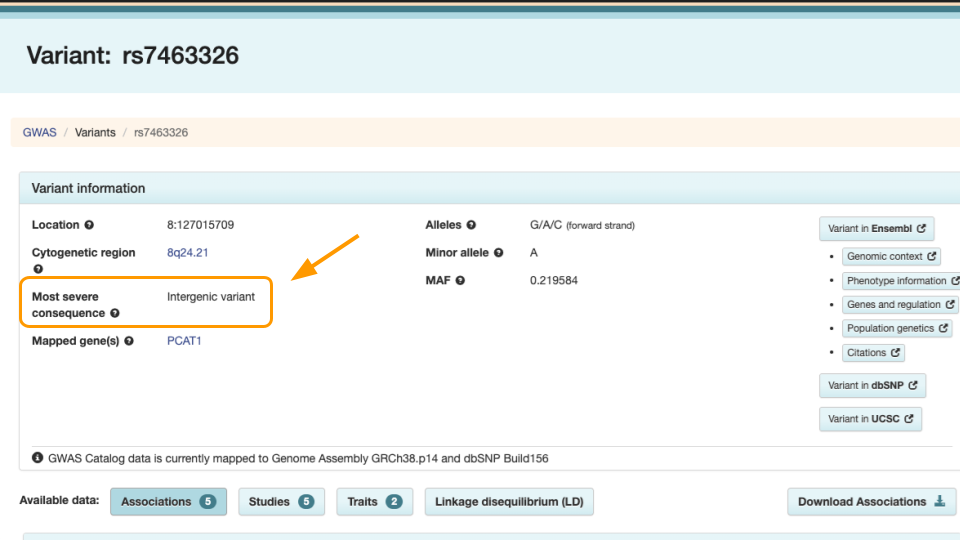

Genomic Medicine: Polygenic Risk Score Calculation
Part 1
In Part 1, we’ll go over the background and data for this activity.
Many human diseases are caused by a combination of genetic and environmental factors. For most of these diseases, it can be difficult to predict what combination will lead to a person developing disease. Instead, physicians and researchers talk about the increased risk - essentially, we know what factors increase the likelihood of developing diseases, even if we can’t predict with 100% certainty whether someone might get sick.
Polygenic Inheritance
When we think about genetically-inherited diseases, we usually think about those where a single gene variant can cause disease. Most of the classic examples of genetic disease, like sickle cell anemia, Tay Sachs, or cystic fibrosis, are passed along via Mendelian inheritance. A mutation in a single gene is sometimes enough to disrupt normal protein synthesis and cellular processes, causing a person to become sick. For example, the large “V” in the image below indicate disease-causing variants for cystic fibrosis.

However, most diseases, particularly common diseases, are not the result of a mutation to a single gene. Instead, they are the result of mutations to many different genes. Each mutation itself isn’t enough to cause problems, but when all of them show up together, the cellular processes aren’t able to function normally. This type of inheritance (when a trait is caused by a combination of mutations to many genes) is called polygenic inheritance. For example, coronary artery disease is complex. There are about 60 genomic variants across the genome that are more common in people with coronary artery disease.
Polygenic traits are quite common, and they aren’t always diseases! Any trait that shows a range of phenotypes is likely to be the result of polygenic inheritance. Some of the more famous polygenic traits include height and skin color.
Polygenic Risk Scores
Researchers have developed something called a “polygenic risk score” (PRS) to estimate relative risk for a disease based on genetics. First, researchers gather genomic data from many people, dividing them into two groups: those with versus those without the disease. They compare these groups to find genetic differences. These differences are used in the PRS calculation.
We can look at all the variants a person might have, add them up, and then get an idea of whether they have more variants that contribute to a disease relative to how many protective variants they have.
Typically, values greater than 1 mean that variant is more common in the disease group. Let’s imagine we are helping a patient determine their risk for coronary artery disease. Their score is 1.0234. We have to look at the score relative to others to determine the risk. This patient is in the 33rd percentile, meaning that they have higher risk than 33% of the people in the study population.
TipUnderstanding Risk
It’s always important to remember that having a higher PRS does not guarantee someone will get a disease. Likewise, having a lower PRS does not guarantee someone is protected from a disease.
A PRS is just a rough estimate based on what we know at the moment about the genetics that contribute to developing a disease. In many case, a high PRS will only increase a person’s overall risk for a disease by less than 5%.
A PRS is only as good as the reference database for a particular disease or trait.
Genomic Ancestry
The human genome contains a huge amount of variation. Different geographic regions have different frequencies of variants. By comparing individuals to others, an individual person’s variants can be used to determine the geographic region of their most likely ancestors. Several commercial companies perform these comparisons. Variants in the mitochondrial DNA are maternally inherited, variants in the Y chromosome are paternally inherited, and autosomal variants can come from either parent [1].
Exploring Variant Data
In the next steps, we’ll be looking at how PRS can help patients be more informed about disease risk.
This example will look at prostate carcinoma, or prostate cancer. While prostate cancer is common in men and is a leading cause of cancer-related death, it tends to be slow growing with limited aggressiveness [2]. This means that genetic screening and symptom monitoring, especially in older age, can have a big impact on outcomes.
Mr. J’s Data
Mr. J is a man living in Baltimore, and recently celebrated his 50th birthday. He is a history teacher with Baltimore City Schools and recently has been enjoying spending more time with his bowling league. One of his teammates let Mr. J know he won’t make it to practice on Friday because he’s getting a cancer screening. Curious, Mr. J asks how often that has to happen. He wonders if he needs to get screened. He learns that his teammate has been getting screened more often because of a family history of prostate cancer and genetic testing results.
The next time Mr. J goes to his doctor, he asks if he should get genetic testing done. His uncle had prostate cancer but he’s not sure if it has a genetic link. Mr. J also has African ancestry, and he wonders if this is important to understanding his cancer risk.
In the next steps, we’re going to look at some gene screening data for Mr. J, to understand his risk. First, let’s explore a variant to learn more.
Exploring Variants
Let’s explore the rs7463326 variant a bit more. Go to https://www.ebi.ac.uk/gwas/variants and type “rs7463326” in the search bar.
Select the first result.
Notice the variant information. The most severe rs7463326 variant lies in an intron, or in a part of the gene that doesn’t end up in the final protein.

Scroll down to see the risk allele associated with the variant. For rs7463326, the risk allele is “G” and it’s associated with prostate carcinoma.
Mr. J has a “G” here. Other people might have “A” or “C”.
This means he might be more at risk than other people. However, we know risk is often dictated by multiple genes. In the next steps we’ll explore how to assess risk with multiple variants.
Part 1 Questions
NoteCheck Your Knowledge
When treating genetic disease, why is it important to examine multiple genes, rather than examine one gene at a time?
Which of these are accurate statements?
- Having certain gene variants can mean increased risk of disease.
- Higher PRS scores guarantee development of disease.
- PRS must be based on an appropriate database of gene variants.
- All variants come from protein-coding genes.
- Having certain gene variants can mean increased risk of disease.
Try looking up another variant at https://www.ebi.ac.uk/gwas/variants. Look up “rs2075650”. Take a screenshot/screenshots that capture:
- The kind of variant is listed under “Most severe consequence”
- Any diseases associated with this variant?
Part 2
We’ll now calculate our first PRS score.
Entering Data
Go to https://prs.byu.edu/calculate_score.html - this is the website we’ll use to calculate a PRS for Mr. J’s data.
Get the data at https://genomicseducation.org/data/prs_ind_1.txt. It should look like:
rs7463326:G
rs58235267:G
rs74001374:C
...
TipWhat does the data mean?
Each line of the data represents a variant location in the genome and individual person’s version of that gene (allele).
For example, rs7463326 is the variant. Mr. J has a “G” here. Other patients might have “A” or “C”.
Copy this data into the top part of the PRS calculator website.
Selecting the Study
Next, scroll down to “GWAS Summary Statistics”. For item #1, “Select Disease(s) or Trait(s) of Interest”, type in “prostate carcinoma” and select the checkbox. You might need to type slowly as the dropdown list has a lot of options! Then, click on “Apply Filters” to update the studies that can be used to calculate the PRS.
Under “Select from Filtered Studies”, type in the study number, “GCST011047”, or find it from the dropdown menu. You will also see the name of the study, Conti et al. 2021.
TipWhy a Specific Research Study?
In order to be accurate, PRS scores must be calculated based on the right variants. Variants should be collected from the same ancestral population as the patient. This is because some alleles are more rare in specific human ancestries and can confer different amount of risk / protection. Mr. J has African ancestry, so we should use a study whose participants also have African ancestry.
Mr. J’s variant data was carefully collected based on the variants identified in the Conti study (GCST011047).
Selecting the Population
Select “African” as the “Preferred Super Population” and “1000 Genomes - AFR population” under “MAF Population”.
Finally, click “Calculate Risk Scores”.
Interpreting the Score
The calculated score for this study will appear in the box at the bottom. You will have to scroll over.
TipViewing Results
It might be easier to view the results if you (1) download the results and (2) open the results in a tabular data program like Microsoft Excel or Google Sheets.
Let’s review a few important values in the results.
- SNP Overlap: This tells us how many variants in the patient’s data were also present in the study. 19 of Mr. J’s variants matched the Conti study.
- Included SNPs: This tells us how many variants were in the study overall. Mr. J’s data was comprehensive and included all of the 19 variants described in the Conti study. We can feel confident that there is not a lot of missing data.
- Polygenic Risk Score: Risk estimate based on all of Mr. J’s variants. Because the score is greater than 1, generally that means some increased risk.
- Percentile: Risk described relative to others in the population. A percentile of 100 means that Mr. J has greater risk than almost everyone else! He has more of the disease causing variants compared to others in the population.
Part 2 Questions
NoteCheck Your Knowledge
Provide a screenshot of your calculated PRS and percentile.
Based on the PRS and percentile you calculated, will Mr. J develop prostate cancer? Why or why not?
Go to the Conti (GCST011047) study page and look at the description under “Discovery ancestry label”. What ancestries are included? Provide a screenshot.
How many people were used to identify these variants in the Conti study? Hint: add up the cases (has cancer) and controls (no cancer) under “Discovery sample description”.
Part 3
In Part 3, we’ll see what happens when we use a different study.
Adding a Study
Scroll back up to the “Select from Filtered Studies” dropdown. Find Study “GCST000152” (Eeles et al. 2008) and check the box. The Eeles study has different variants compared to the Conti study.
You can leave the previous study checked. Now there are two studies included.
Click on “Calculate Risk Scores” again. This time you should have two lines of results.
Comparing Results
Let’s look at the results.
- SNP Overlap: 11 of Mr. J’s variants matched the Eeles (GCST000152) study.
- Included SNPs: Mr. J’s data had all of the 11 variants described in the Eeles study.
- Polygenic Risk Score: The score is greater than 1, generally that means some increased risk.
- Percentile: Risk described relative to others in the population. A percentile of 82 means that Mr. J has greater risk than 82% of other people.
TipCapturing More Variants
A mismatch between the study population and the patient’s ancestry can create gaps in PRS analysis. Many early studies were performed on genomes of people of European ancestry. This means that more reliable data is present for people of European ancestry. In other words, their variants are better known. People of African or East Asian ancestry don’t always have variant data that is as comprehensive. This means it’s more likely to end up in the situation above, where we might think the risk is lower than it truly is.
Scientists realized recently that this was a problem. Programs like All of Us aim to collect better data on people from diverse backgrounds to improve PRS. Technology improvements have also made it more affordable to screen for more variants.
Part 3 Questions
NoteCheck Your Knowledge
Provide a screenshot of your calculated PRS and percentile, now with both studies.
Go to the Eeles (GCST000152) study page and look at the description under “Discovery ancestry label”. What ancestry is included? Provide a screenshot.
Given that Mr. J has African ancestry, which study (Conti or Eeles) is a more appropriate match to assess his risk?
Imagine you were helping Mr. J’s providers craft a care plan. Based on Mr. J’s results, would you recommend more frequent screening? Why or why not?
Part 4
In Part 3, we’ll check out data for one of Mr. J’s friends.
Repeat the steps above, with Mr. B’s data: https://genomicseducation.org/data/prs_ind_2.txt. Make sure to select both the Conti and Eeles studies.
Part 4 Questions
NoteCheck Your Knowledge
Provide a screenshot of your calculated PRS and percentile, with both studies.
Which study is more appropriate if Mr. B has African ancestry? European ancestry?
Would you recommend more frequent screening to Mr. B? Why or why not? How do his results compare to Mr. J’s results?
References
[1]
L. B. Jorde and M. J. Bamshad, “Genetic ancestry testing: What is it and why is it important?” Jama, vol. 323, no. 11, pp. 1089–1090, 2020, Available: https://pmc.ncbi.nlm.nih.gov/articles/PMC8202415/
[2]
S. Leslie, T. Soon-Sutton, and W. Skelton, “Prostate cancer,” in StatPearls [internet], Treasure Island (FL): StatPearls Publishing, 2024. Available: https://www.ncbi.nlm.nih.gov/books/NBK470550/